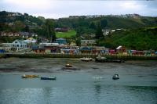
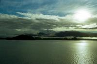
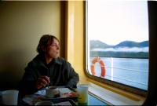
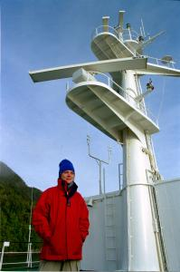
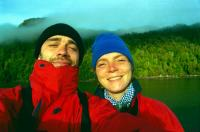
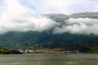
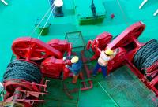
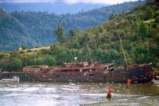

|
Lundi 20 août
On prend le bus et on retrouve Marylin et Christian, une américaine et un hollandais
qu'on avait croisés dans le parc national sous la pluie. Ils descendent eux
aussi vers le sud, à Puerto Natalès mais en bateau. L'enthousiasme de Marion
pour cette croisière l'emporte sur mon inquiétude concernant le climat et l'état
de la mer. Nos deux jours de bus se transformant assez rapidement en 3 ou 4
jours sur la mer en direction de la Patagonie. A 16h00, nos billets sont achetés
mais le bateau qui devait partir ce soir ne part que demain à cause du mauvais
temps. Ca commence bien!
Puerto Montt est une ville de taille moyenne avec un centre piétonnier plutôt
agréable. Comme à Santiago, il y a un nombre invroyable de galeries marchandes
et de centres commerciaux. On est loin de l'Asie où le beau temps et la chaleur
permettent de vicre dans la rue. Et puis, à Puerto Montt, il y a le musée jean-paul
II où il y a paraît-il une assiette où le pape a mangé. Je dis "parait" parce
qu'en fait, le musée est fermé. Dégoûtés!
Mardi 21 août
Le bateau! "El Magallanes"! 3h30 du matin, ça y est, on embarque! Le mauvais
temps a enfin permis à notre bateau, "le magellan" d'arriver. C'est un assez
gros bateau qui peut transporter plus de 300 passagers ainsi que plein de véhicules.
Nous, on a pris les places les moins chères (900FF malgré la basse saison, mais
attention, on part tou de même pour minimum 3 nuits). Nos cabines sont pour
4 personnes, salle de bain à l'extérieur et sans fenêtre. Il est donc 3h00 du
mat' quand le marin rassemble les passagers pour les embarquer. Au lieu des
300 possibles, il n'en trouve que 14 après avoir bien regardé s'il n'oubliait
personne. On arrive dans la grande salle à manger (vu qu'on est 14, ça nous
fait plusieurs tables chacun, on ne va pas se marcher dessus!). Et là, excellente
surprise que nous a réservé l'équipage, on se retrouve tous 2 par cabines, dans
des supers cabines avec salle de bain et hublot! Les surprises ne s'arrêtent
pas là, il y a un radiateur! Quand on sait que la plupart des maisons n'est
pas chauffée, quel luxe! On va enfin pouvoir se changer, faire la lessive et
faire sécher nos affaires. Changer de chaussettes, le bonheur, surtout pour
notre entourage! Le chtit Lolo est très prépoyant et range tout bien arrimé,
surtout la bouteille de rhum (et après on dit que c'est moi la picolo de service!).
On ne sait jamais avec le roulis, ça pourrait tomber. Enfin, on ne partira pas
avant la matinée, le temps de charger les innombrables remorques.
On est quand même bien contents de voir qu'il existe ce bateau, on n'y croyait
presque plus. Il était sensé arriver lundi à 18h00, et a été retardé, annoncé,
confirmé, annulé... L'organisation chilienne a l'air d'être parfois un peu approximative.
Mais ce n'est pas bien grave, ça nous a permis de nous installer à une table
du "Lomito's", une chaîne de fast food qui copie le macdo et où l'on sert des
sandwiches style hamburgers mais avec de fines tranches de veaux. En plus, il
fallait bien patienter, on a profité d'une super promo... un truc à grignoter
avec 2 litres de cristal, une bière locale. Santé!
Mercredi 22 août
Vite, il est 8h00, il ne faudrait pas qu'on rate le petit déj ni le départ
du bateau. On est les 2 seuls fous à s'être levés, mais avec l'embarquement
qui a eu lieu à 4h00 du mat'... Vers 14h00 seulement, alors que tout le monde
commence à faire son intéressant et à expliquer qu'on ne partira pas avant ce
soir à cause de la marée, ça y est, le bateau décolle. Vu le bruit qu'ils ont
fait toute la nuit et ce matin, on déduit avec une bonne dose de perspicacité
que le départ a été causé par le chargement des camions. Et maintenant, c'est
parti pour... on ne sait pas trop combien de jours. Normalement, 3 et demi,
mais cela va dépendre du temps nous a expliqué un marin hier soir dans la salle
d'attente. C'est pour cela qu'on est parti avec du retard. En tout cas, malgré
les prévisions pessimistes de tous, incroyable, le soleil brille, si seulement
ça pouvait continuer. On croise tous nos doigts disponibles. La mer est tellement
calme qu'on a l'impression d'ètre sur un lac. En fait, on n'est pas en pleine
mer. Pour le moment, on longe la côte sur notre gauche et sur notre droite,
l'île de Chiloé nous protège des fureurs de la haute mer. Brave Chiloé où le
temps semble s'être arrêté.
Jeudi 23 août
Ici, on ne "déconne" pas, l'heure, c'est l'heure. Le petit déj est à 8h00,
le dejeuner à 12h00 et le dîner à 19h00. Autant dire qu'on a vite pris le pli
et qu'on est toujours là 5 minutes en avance! Les plats sont copieux, comme
souvent au Chili, et même s'il s'agit clairement de cuicine collective, c'est
plutôt bon. Par contre, il doit y avoir eu un problème d'intendance ou une grosse
promo. Parce que c'est quand même un peu moules à tous les repas. Moules dans
la soupe, purée de pommes de terre et moules, tarte aux moules, et moules aux
moules.
Il y a une super ambiance sur le bateau, très vite on connait tout le monde.
Marilyn et Christian rencontrés à Chiloé, Luise et Adrien les anglais qui font
le tour du monde dand l'autre sens que nous, David l'anglais qui, tout fier,
se balade avec une cassette vidéo d'une émission télé chilienne dans laquelle
il est passé (et aussi avec des sandales sans chaussette! pour un anglais!),
Vincent, un franco chilien, Heidi (c'est son vrai prénom) et Ludo le marin-pêcheur.
Et aussi quelques hispanophones avec qui on a un peu plus de mal à discuter
vu notre niveau pitoyable en espagnol. Le soir, chacun sort sa bouteille de
rhum ou de pisco, l'alcool local. C'est bizarre, tout le monde a pensé à prendre
quelque chose à boire.
Toute la journée, les paysages ont été vraiment magnifiques. Pas très variés
il faut le reconnaître, pas d'icebergs et de glace comme on l'imaginait, mais
des colines et des montagnes dont les sommets sont enneigés et dont les pentes
sont recouvertes de conifères. Par contre, petite déception au niveau de la
faune, toujours pas de baleines, ni de pingouins et très peu d'oiseaux. Mais
ce n'est pas la bonne saison. La mer, elle, est toujours aussi calme. On voyage
au milieu des fjords, des canaux naturels formés par la mer qui découpe la terre
en une multitude de petites îles. C'est curieux cette sensation d'être à la
fois à la mer et à la montagne. Nous voyageons sur le Pacifique, voyons des
oiseaux marins, mais nous sommes entourés de montagnes enneigées et l'air marin
vif est très froid et sent "comme à la montagne". Vers 12h00, une petite escale
à Puerto Chacabuco. Le capitaine ne veut pas qu'on descende mais de toute façon
il est midi, l'heure du déjeuner! A 23h00, alors que ça picole pas mal, on rentre
dans le Golfe de Peñas. On quitte les fjords pour la haute mer. Ca va être terrible,
c'est sûr, on n'est pas si loin du cap Horn et à ces latitudes (au-delà du 40ème),
la mer est déchaînée. Tout le monde se prépare à vomir mais... pas grand chose.
En fait, le bateau remue plus qu'avant mais ce n'est pas la grosse tempête.
C'est même plutôt marrant de marcher sur le pont du bateau, on se sent lourd,
lourd, lourd, écrasé au sol, et après léger, léger, léger.
Suite du voyage : La Patagonie-Puerto Natales
|

Chili
Puerto Montt
|

Chili
El Magallanes
|

Chili
El Magallanes
|

Chili
El Magallanes
|

Chili
El Magallanes
|

Chili
El Magallanes
|

Chili
El Magallanes
|

Chili
El Magallanes
|
|
|